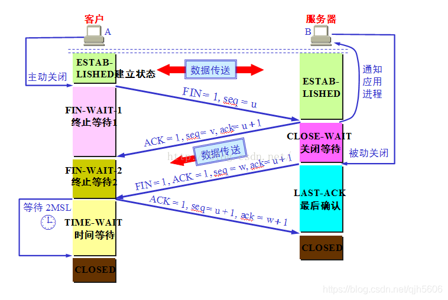

计算机网络
计算机网络概念
计算机网络概念：分散的具有独立功能的计算机系统，通过通信设备与线路连接起来，由功能完善的软件实现资源共享和信息传递的系统，是互连互通的、自治的计算机集合。
| 功能 | 说明 |
|---|---|
| 数据通信 | 数据传输 |
| 资源共享 | 硬件使用权共享、软件共享、数据共享 |
| 分布式处理 | 通过分工提高效率 |
| 提高可靠性 | 使用替代机、备份机 |
| 负载均衡 | \ |
| 依据 | 组成 |
|---|---|
| 部分 | 硬件（线路、通信设备）、软件、协议 |
| 工作方式 | 边缘部分（P2P/CS）、核心部分（路由器） |
| 功能 | 通信子网（网络层到物理层）、资源子网（应用层到会话层） |
| 依据 | 分类 |
|---|---|
| 分布范围 | 广域网WAN、域域网MAN、局域网WAN、个人区域网PAN |
| 使用者 | 公用网、专用网 |
| 交换技术 | 电路交换、报文交换、分组交换 |
| 拓扑结构 | 总线型、星型、环型、网状型 |
| 传输技术 | 广播式、点对点 |
分层模型
来源：网络实现需要大量功能支撑，因此需要划分层次，划分职责
法定标准
| OSI分层参考模型 | 内容 |
|---|---|
| 应用层 | 用户与网络的界面 |
| 表示层 | 数据格式变换、数据加密解密、数据压缩与恢复 |
| 会话层 | 建立、同步、终止会话，校验点/同步点 |
| 传输层 | 可靠传输、差错控制、流量控制、复用分用 |
| 网络层 | 路由选择、差错控制、流量控制、拥塞控制 |
| 数据链路层 | 成帧、差错控制、流量控制、访问控制 |
| 物理层 | 定义接口特性、传输模式、传输速率、比特同步、比特编码 |
事实标准
| TCP/IP分层参考模型 | 内容 | 协议 | 设备 | 传输两方 | 单元分割 |
|---|---|---|---|---|---|
| 应用层 | 支持各种网络应用 | DHCP、RIP、BGP、FTP、SMTP、POP3、IMAP、DNS、HTTP、 | \ | 应用→应用 | 报文 |
| 传输层 | 进程间的数据传输 | UDP、TCP | \ | 端口→端口，使用端口号 | 报文段 |
| 网络层 | 主机间数据分组和路由转发 | ARP、IPV4、IPV6、ICMP、OSPF | 路由器 | 主机→主机，使用IP地址 | 数据报 |
| 数据链路层 | 把网络层传下来的数据报组装成帧 | GBN、SR、WDMA、FDMA、TDMA、CDMA、ALOHA、CSMA-CD/CA、Ethernet、802.11、PPP、HDLC | 交换机、网桥 | 设备→设备，使用MAC地址 | 帧 |
| 物理层 | 比特传输 | RJ45 | 中继器、集线器 | 设备→设备，无地址 | 比特 |
| 协议三要素 | 说明 |
|---|---|
| 语义 | 规定了协议执行功能 |
| 语法 | 规定了传输数据的格式 |
| 时序(同步) | 规定了传输数据的次序 |
通信基础
| 术语 | 内容 |
|---|---|
| 数据 | 传送信息的实体 |
| 信号 | 数据的电气/电磁的表现，是数据在传输过程中的存在形式 |
| 数字信号 | 代表消息的参数取值是离散的 |
| 模拟信号 | 代表消息的参数取值是连续的 |
| 编码 | 生成可发送的数字信号 |
| 调制 | 生成可发送的模拟信号 |
| 基带信号 | 来自信源的信号，直接放在信道上传输 |
| 宽带信号 | 基带信号经过调制后，放在模拟信道上传输 |
| 信源 | 产生和发送数据的源头 |
| 信宿 | 接受数据的终点 |
| 信道 | 信号的传输媒介 |
| 数字信道 | 传输数字信号的信道，处理快，传输距离短、数据少、速率慢 |
| 模拟信道 | 传输模拟信号的信道，处理慢，传输距离远、数据多、速率快 |
| 单工通信 | 单向通信，只有一个方向的通信而没有反方向的交互 |
| 半双工通信 | 双向通信，同一时刻只能有一方发送另一方接受数据 |
| 全双工通信 | 双向通信，两方可同时发送和接收数据，需两条信道 |
| 码元 | 固定时长的信号波形（不一定是平的），固定时长为码元宽度 |
| K进制码元 | 一个码元可以有K种不同信号表示方式 |
| 性能指标 | 内容 |
|---|---|
| 波特率、码元传输速率 | 单位baud |
| 比特率、信息传输速率 | =×波特率，单位bit/s |
| 有效信息传输速率 | =比特率×有效信息率，单位bit/s |
| 带宽 | 网络设备支持的最高传输速率，单位bit/s |
| 信道带宽 | 网络发送设备支持的最高传输（=发送）速率 |
| 发送时延、传输时延 | =数据长度÷信道带宽 |
| 传播时延 | =信道长度÷传播速率 |
| 排队时延 | 进出路由器、末端设备的时间（较少出现） |
| 处理时延 | 路由器（较少出现）、末端设备的处理时间 |
| 时延带宽积 | =传播时延×信道带宽 |
| 往返时延RTT、ping、发送周期 | =传播时延×2＋末端处理时间 |
| 信道利用率 | =有数据通过时间÷发送周期 |
| 网络利用率 | 信道利用率的加权平均 |
物理层
接口特性
| 接口特性 | 内容 |
|---|---|
| 机械特性 | 规格、接口形状、引线数目、引脚数量 |
| 电气特性 | 电压范围、阻抗匹配、传输速率和距离限制 |
| 功能特性 | 某一电平表示何种意义 |
| 规程特性 | 各物理线路的工作规程和时序关系 |
传输速率
奈氏准则
码间串扰：因频率太高、码元传输速率太快导致的码元界线不清楚。
在无噪音带宽受限下，为避免码间串扰：
信道极限波特率（Baud）：
信道极限比特率（b/s）：，
：信道带宽Hz，：码元进制数
香农定律
失真：码元波形在传输过程中受到干扰失去原来的形状，分可识别失真和无法识别失真。影响失真的因素有传输距离、噪声干扰、传输媒介质量。
在带宽受限且有噪音的信道中，为避免无法识别的失真：
信道极限比特率（b/s）：
：信道带宽Hz，信噪比
信号发送
| 类型 | 信源信号类型 | 发送信号类型 |
|---|---|---|
| 数字发送器 | 数字信号 | 数字信号 |
| 调制器 | 数字信号 | 模拟信号 |
| PCM编码器 | 模拟信号 | 数字信号 |
| 放大调制器 | 模拟信号 | 模拟信号 |
数字发送器
| 编码方式 | 代表1 | 代表0 | 评价 |
|---|---|---|---|
| 非归零编码NRZ | 高 | 低 | 需发送时钟周期信号，以区别2个相邻一样的码元 |
| 归零编码RZ | 高低 | 低 | 需发送时钟周期信号，以区别2个相邻一样的码元 |
| 反向不归零编码NRZI | 码元间不换电平 | 码元间换电平 | 需发送时钟周期信号，以区别2个相邻一样的码元 |
| 曼彻斯特编码 | 高低/低高 | 低高/高低 | 无需时钟信号 |
| 差分曼彻斯特编码 | 码元间不换电平，码元中换电平 | 码元间换电平，码元中换电平 | 比反向不归零多了码元中间必换电平，无需时钟信号 |
| 4b/5b编码 | \ | \ | 用5b编码表示4b数据，1b来控制 |
调制器
| 调制方式 | 说明 |
|---|---|
| 调幅 | 振幅不同高低 |
| 调频 | 频率不同高低 |
| 调相 | 正余弦等 |
| QAM | 排列组合调幅调相，总数：调幅数×调相数 |
- QAM不用调频可能是因为频率是用来增加传输的抗干扰性。
PCM编码器
步骤：
-
抽样：，因为模拟信号1Hz可以看成是正余弦函数，只需2组，即可求出A、B得到1Hz的整个函数。
-
量化：对振幅进行分级标度，使用二进制位数表示，标度越多，位数越长，精度越高
-
编码：一个采样点记录其所处位置最近的一个分级标度二进制数。
44100Hz：人耳听力频率范围20Hz-20KHz，得采样频率≥40KHz
放大调制器
提高模拟信号的频率，来提高传播过程的抗干扰性。
传输介质
| 传输介质 | 类别 | 信号形式 | 组成 | 例子 |
|---|---|---|---|---|
| 双绞线 | 导向性 | 电 | 多组两根采用一定规则并排绞合的，相互绝缘的铜导线 | RJ45网线（4组8根） |
| 同轴电缆 | 导向性 | 电 | 导体铜质芯线、绝缘层、网状编制屏蔽层、塑料外层 | 电视接口 |
| 光纤 | 导向性 | 光 | 纤芯实芯、包层 | 单模光纤、多模光纤 |
| 无线电波 | 非导向性,所有方向传播，穿透能力强 | 光 | \ | \ |
| 微波 | 非导向性,固定方向传播，频率较高 | 光 | \ | 地面微波接力通信、卫星通信 |
| 红外线、激光射线 | 非导向性,固定方向传播，频率较高 | 光 | \ | \ |
-
双绞原因：右手螺旋定则
-
单模光纤：直线传播，损耗少，距离远
-
多模光纤：反射传播，损耗多，距离近
数据链路层
功能概述
| 功能 | 说明 |
|---|---|
| 封装成帧 | 实现帧定界、帧同步 |
| 差错控制 | 对帧错、位错检查与更正 |
| 流量控制 | 控制发送方的发送速度 |
| 介质访问控制 | 解决信息同时传输时的冲突 |
| 链路管理 | 面向连接服务连接的建立、维持、释放 |
| 为网络层提供服务 | 无确认无连接服务、有确认无连接服务、有确认面向连接服务 |
封装成帧
概念：在数据部分首尾添加帧首部/帧尾部进行帧定界，从而实现接收方帧同步。
| 组帧方式 | 说明 | 评价 |
|---|---|---|
| 字符计数法 | 首添加记录，后面有几位 | 一错满盘皆错 |
| 字符填充法 | 首尾添加ASCII控制字符、数据内容与之相同加转义字符 | 复杂、兼容性差 |
| 零比特填充法 | 首尾添加6个0，数据内容遇到5个0就插1，解码遇到5个0删1 | 常用 |
| 违规编码法 | 首尾使用无意义的电平 | 常用 |
差错控制
| 差错类别 | 说明 |
|---|---|
| 位错 | 1变0，0变1 |
| 帧错 | 位丢失、位重复、位失序 |
- 奇偶检验码、CRC循环冗余码、海明码控制差错见《计算机组成原理》
流量控制
| 流量控制方式 | 发送窗口 | 接收窗口 | 特性 | 评价 |
|---|---|---|---|---|
| 停止等待协议 | 1 | 1 | 超时重传，回复确认 | 信道利用率太低 |
| 后退N帧协议GBN | N | 1 | 超时重传，回复确认，累计确认 | 无情丢弃后退重传 |
| 选择重传协议SR | N | N | 超时重传，回复确认，累计确认 |
-
超时重传：发送方设超时计数器，时长设比RTT更长一点。
-
回复确认：接收方在收到任何帧，都会回复确认，都是期待下一个没收到的。
-
累计确认：发送方收到后面确认帧默认前面已成功。
-
N取值限制：
介质访问控制
| 介质访问控制方式 | 类别 | 说明 |
|---|---|---|
| 频分多路复用FDMA | 静态 | 使用不同频率 |
| 时分多路复用TDMA | 静态 | 时间片轮转 |
| 波分多路复用WDMA | 静态 | 使用不同光频 |
| 码分多路复用CDMA | 静态 | 向量加法(原码反码0,1改-1,1，1发原码，0发反码，正交序列的各家芯片直接相加发送)、向量内积(收到向量和与某家原码内积/分量，-1是该家发0，1是该家发1，0是该家没发) |
| ALOHA协议 | 动态 | 想法就发，冲突重发 |
| 时隙ALOHA协议 | 动态 | 在信道分段的开始才能发 |
| 坚持CSMA协议 | 动态 | 忙一直监听，空闲马上发 |
| 非坚持CSMA协议 | 动态 | 忙随机时间再监听，空闲马上发 |
| p坚持CSMA协议 | 动态 | 忙随机时间再监听，空闲p概率发 |
| CSMA-CD协议 | 动态、总线 | 检测算法、重发时间、最小帧长 |
| CSMA-CA协议 | 动态、无线 | 监听→空闲发出请求连接RTS→响应请求CTS→预约信道(告诉其他站点)→发完需ACK确认帧 |
| 轮询协议 | 动态 | 主结点循环轮流询问每个结点是否需要发送数据，需要则独占信道发送，没有MA |
| 令牌传递协议 | 动态 | 令牌(特殊格式的MAC控制帧)循环在每个结点流动，发数据要持有令牌 |
-
CSMA-CD协议检测算法：当发送数据后经过后接受到数据，说明发生冲突。
-
CSMA-CD协议重发时间：第k次重发，随机数取值范围，经过等待时间，后重发，重发达16次报告网络拥挤，但k最大只能取到10。
-
CSMA-CD协议最短帧长：在检测到冲突时帧没有发完，以太网最短帧长64B。
局域网协议 IEEE 802
| 内容 | 说明 |
|---|---|
| 802.3 | Ethernet以太网 |
| 802.4 | 令牌总线网 |
| 802.5 | 令牌环网 |
| 802.6 | 域域网 |
| 802.7 | 宽带技术 |
| 802.8 | 光纤技术 |
| 802.11 | 无线局域网 |
Ethernet以太网 802.3
概念：基带总线局域网规范、使用CSMA/CD介质访问控制技术
特点：造价低、速度快10Mb/s-10Gb/s
发展：同轴电缆→双绞线＋集线器
总线型→星型（逻辑上仍是总线型）
| MAC帧格式 | 大小 |
|---|---|
| 前导码 | \ |
| 目的地址 | 6B |
| 源地址 | 6B |
| 类型 | 2B |
| 数据 | 46-1500B |
| 帧校验序列FCS | 4B |
- 最短帧长64B=46+4+6+6+2
| 术语 | 说明 |
|---|---|
| 10BASE-T | 10Mb/s，T(twin)：双绞线，F(fiber)：光纤 |
| 通信适配器 | 网卡，MAC地址 |
| 高速以太网 | ≥100Mb/s |
无线局域网 802.11
| MAC帧格式 | WDS无线分布式系统 | IBSS不跨基站 | To AP | From AP |
|---|---|---|---|---|
| 帧控制 | \ | \ | \ | \ |
| 生存周期 | \ | \ | \ | \ |
| 地址1 | 接收端RA | 目的地址DA | BSSID | 目的地址DA |
| 地址2 | 发送端TA | 源地址SA | 源地址SA | BSSID |
| 地址3 | 目的地址DA | BSSID | 目的地址DA | 源地址SA |
| 序列控制 | \ | \ | \ | \ |
| 地址4 | 源地址SA | \ | \ | \ |
| 说明 | 基站到基站 | 个人到个人 | 个人到基站 | 基站到个人 |
-
基站分固定、无固定
-
看前两个接收方、发送方是谁就知道是哪种类型
PPP协议
概念：点对点协议
特点：全双工、简单、封装成帧、透明传输、多种网络层协议、多种类型链路、差错检测、检测连接状态、最大传送单元、无需纠错、无需流量控制
| MAC帧格式 | 大小 |
|---|---|
| F | 1B |
| A | 1B |
| C | 1B |
| 协议 | 1B |
| 数据 | 1500B |
| 帧校验序列FCS | 2B |
| F | 1B |
HDLC协议
概念：高级数据链路控制
| MAC帧格式 | 大小 |
|---|---|
| F | 1B |
| 地址 | 1B |
| 控制 | 1B |
| 信息帧 | 可变 |
| 数据 | 2B |
| F | 1B |
设备
交换机是多口网桥。
| 网桥分类 | 说明 |
|---|---|
| 透明网桥 | 转发表记录信息源MAC地址与接口映射关系 |
| 源路由网桥 | 广播发送发现帧，到目的地址上的设备依次回复，记录最佳路线 |
| 交换机分类 | 说明 |
|---|---|
| 直通式 | 查完目的地址就发，不检测错误 |
| 存储转发式交互性 | 检测错误 |
-
冲突域：被链路层设备隔离的区域，域内无冲突控制，域外有冲突控制。
-
广播域：被网络层设备隔离的区域，广播范围为域内，一般不转发到域外。
网络层
功能概述：最佳路径、异构网络互联、拥塞控制、提供主机与主机之间的逻辑通信
ARP协议
概念：地址解析协议，通过IP地址找MAC地址，存IP地址与MAC地址的映射表。
注意：在OSI分层参考模型属于数据链路层、在TCP/IP分层参考模型属于网络层
过程：
-
检查ARP高速缓存：是否有某IP对应的MAC地址，有则直接使用
-
没有则用目的MAC地址为全1以广播ARP请求分组
-
目的IP的主机收到请求后会向源主机单播一个ARP响应分组，源主机收到后写入ARP高速缓存。
IPV4协议
IPV4数据报格式
| IPV4数据报格式 | 大小 | 类别 | 说明 |
|---|---|---|---|
| 版本 | 0.5B | 首部固定 | 表示IP版本号，IPV4为0100，IPV6为0110 |
| 首部长度 | 0.5B | 首部固定 | 表示固定首部长度，有多少个4B |
| 区分服务 | 1B | 首部固定 | 使用才有意义，实际很少用到 |
| 总长度 | 2B | 首部固定 | 表示IP数据报总长度，有多少个1B |
| 标识 | 2B | 首部固定 | 数据报太长(达MTU)分片，某分片的标识符 |
| 标志 | 3b | 首部固定 | 第1位无效、第2位DF是否禁用分片，第3位MF后面是否还有分片 |
| 片偏移 | 13b | 首部固定 | 代表分片在原分组的偏移，有多少个8B |
| 生存时间 | 1B | 首部固定 | 生命值，经过路由器-1，变成0丢弃 |
| 协议字段 | 1B | 首部固定 | 表示传输层协议 |
| 首部校验和 | 2B | 首部固定 | 首部的校验位，以2B为单位，求和取反 |
| 源地址 | 4B | 首部固定 | 发送方IPV4地址 |
| 目的地址 | 4B | 首部固定 | 接收方IPV4地址 |
| 可选字段 | 0-40B | 首部可变 | 排错、测量、安全 |
| 填充 | / | 首部可变 | 凑成首部4B整 |
| 数据 | / | 数据 | TCP\UDP等传输层报文段 |
-
各种长度记忆：1总8片的首4
-
首部4B倍口诀：
版面和首页都是区域总裁
但这些标识标志都很片面
故对其生存协议进行校验
-
求和取反：取反方法是与全1异或运算
-
差错和拥塞会丢失IP分组，可靠性传输至少需要序号和校验位
IPV4地址
组成：网络号|主机号
大小：32位二进制数，点分十进制表示法
| IPV4地址分类 | 类别为 | 第1位数范围 | 网络号段数 | 主机号段数 | 私有IP |
|---|---|---|---|---|---|
| A类 | 0 | 0-127 | 1 | 3 | 10.0.0.0-10.255.255.255 |
| B类 | 10 | 128-192 | 2 | 2 | 172.16.0.0-172.31.255.255 |
| C类 | 110 | 192-223 | 3 | 1 | 192.168.0.0-192.168.255.255 |
| D类 | 1110 | 224-239 | \ | \ | \ |
| E类 | 1111 | 240-255 | \ | \ | \ |
- 开头类别位，哈夫曼编码
| 特殊IP | 作用 | 源地址 | 目的地址 |
|---|---|---|---|
| 0.0.0.0 | 表示自己的主机 | √ | |
| 255.255.255.255 | 表示向本网广播 | √ | |
| 主机号全0 | 表示自己网络号的整个网络 | √ | |
| 主机号全1 | 向某网络号广播 | √ | |
| 127.0.0.1 | 环回地址，表示自己 | √ |
IPV4术语
| 术语 | 说明 |
|---|---|
| 网络地址转换NAT | 局域网内私有IP与公网IP的转换，并记录在NAT表中，以能让局域网内的私有IP进行网络访问 |
| 子网划分 | 无分类编址的前身， |
| 子网掩码 | 子网划分后，以表示网络号的位数 |
| 默认网关 | 本网路由器地址，默认网关输入正确可以访问路由器外部网路 |
| 无分类编址CIDR | |
| 构成超网、路由聚合技术 | 如果多个子网下一跳都是个同路由器，求多个子网的最大公网络前缀号，作为下个路由器的超网 |
IPV6协议
IPV6数据报格式
| IPV6数据报格式 | 大小 | 类别 | 说明 |
|---|---|---|---|
| 版本 | 0.5B | 首部 | 表示IP版本号，IPV4为0100，IPV6为0110 |
| 优先性 | 1B | 首部 | 区分数据报的类型和优先级 |
| 流标签 | 2.5B | 首部 | 从特定源点到特定终点的一系列数据报，同流具相同标签 |
| 有效载荷长度 | 2B | 首部 | 扩展首部+数据的长度有多少个1B |
| 下一个首部 | 1B | 首部 | 本数据报第一个扩展首部的类型，或者传输层的协议类型 |
| 跳数限制 | 1B | 首部 | 生命值，经过路由器-1，变成0丢弃 |
| 源地址 | 16B | 首部 | 发送方IPV6地址 |
| 目的地址 | 16B | 首部 | 发送方IPV6地址 |
| 扩展首部 | \ | 有效载荷 | 必须8B倍数 |
| 数据 | \ | 数据 | TCP\UDP等传输层报文段 |
- 首部8B倍口诀：版本优先流派有下一跳
- 与IPV4区别：IP数量加大、区分服务/分片/校验/协议字段/各种长度统计移除、即插即用(直接分配无需DHCP)、只能主机分片
IPV6地址
冒号十六进制表示法：八段、每段4个十六进制
-
前导压缩法：每段的最左侧连续0可省，但每段至少有1位
-
双冒号法：中间连续全0的段可以省，用::表示省略段的区域，但只能用一次。
| IPV6地址分类 | 说明 |
|---|---|
| 单播地址 | 一对一 |
| 多播地址 | 一对多 |
| 任播地址 | 选最近的一个 |
| IPV4和IPV6的过渡技术 | 说明 |
|---|---|
| 双栈协议 | 和IPV4一起用 |
| 隧道技术 | 在不能传IPV6的设备前用IPV4重封装过隧道 |
- IPV6内嵌IPV4表示法，::123.345.234.234，::FFFF:123.345.234.234
ICMP协议
概念：网际控制报文协议，用于网络层差错控制，测试连通性和经过路由器个数
| ICMP差错报文 | 内容 |
|---|---|
| 终点不可达 | 无法交付 |
| 源点控制 | 拥塞丢弃 |
| 时间超过 | 寿命为0，或超时 |
| 参数问题 | 首部字段有问题 |
| 改变路由 | 值得更快速的路由通路 |
- 出现上述差错不发的情况有：错的对象为ICMP报文、除了第1个IP分片、组播地址、特殊IP地址。
| ICMP询问报文 | 内容 |
|---|---|
| 回送请求和回答报文 | PING测试两个主机直接的连通性 |
| 时间请求和回答报文 | Traceroute测试从源点到终点的路由器个数 |
OSPF协议
概念：开放式最短路径优先，属于内部网关路由选择协议IGP
过程：
-
每个路由器发现它的邻居结点(hello问候文组，10s一次)，了解邻居节点网络地址
-
设置到它的每个邻居的成本度量metric
-
构造DD数据库描述分组，向邻站给出自己的链路状态数据库中的咋摘要信息（1）
-
如果邻站没有我的信息会申请，向我发送LSR链路状态请求分组（2）
-
收到邻站申请后，我会回送LSU链路状态更新分组（3）
-
邻站收到更新后，会返回一个LSAck链路专题确认分组（4）
-
使用dijkstra算法根据自己的链路状态数据库构造到其他节点间的最短路径
移动IP
| 术语 | 说明 |
|---|---|
| 移动结点 | 具有永久地址的移动设备 |
| 归属代理、本地代理 | 移动结点的就居所中执行移动管理功能的实体，家长 |
| 外部代理、外地代理 | 在外部网络中帮助移动过节点完成移动管理功能的实体，其他家 |
| 永久地址 | 移动站点在归属网络中的原始地址 |
| 转交地址 | 移动站点在外部网络使用的临时地址 |
- 申请转交地址后，传到本地代理的数据会用隧道技术重新封装发到外部代理，外部代理拆封后给申请者
传输层
功能概述：提供进程间的逻辑通信、复用与分用、差错检测
复用：应用层所有的应用进程端口号都可通过传输层到网络层（上到下的过程）
分用：传输层从网络层收到数据后交代指明的应用进程端口号（下到上的过程）
UDP协议
特点：无连接、适用小文件、面向报文、无拥塞控制
| 报文段格式 | 大小 | 类别 | 说明 |
|---|---|---|---|
| 源端口号 | 2B | 首部 | 要回信需要填，否则填全0 |
| 目的端口号 | 2B | 首部 | 实现传输层分用 |
| UDP长度 | 2B | 首部 | 包括数据的整个长度，多少个1B，1总 |
| UDP检验和 | 2B | 首部 | 伪首部校验位、求和取反 |
| 数据 | / | 数据 | 应用层报文 |
| 伪首部格式 | 大小 | 说明 |
|---|---|---|
| 源IP | 4B | \ |
| 目的IP | 4B | \ |
| 补0 | 1B | 凑2B整 |
| 协议 | 1B | TCP6，UDP17 |
| UDP长度 | 2B | 源于首部 |
- UPD和TCP校验和对象都是这个伪首部
TCP协议
特点：面向连接、适用大文件、点对点、全双工通信
| 报文段格式 | 大小 | 类别 | 说明 |
|---|---|---|---|
| 源端口号 | 2B | 固定首部 | 要回信需要填，否则填全0 |
| 目的端口号 | 2B | 固定首部 | 实现传输层分用 |
| seq序号 | 4B | 固定首部 | 报文按字节分割后编号，第一个字节的序号，(发送方和接收方各自独立顺序的编号) |
| ack确认号、期待号 | 4B | 固定首部 | 期待对方下一个分割报文段序号 |
| 数据偏移 | 0.5B | 固定首部 | 首部长度，多少个4B，首4 |
| 保留 | 6b | 固定首部 | \ |
| 控制紧急位UGR | 1b | 固定首部 | 紧急任务需要插队 |
| 控制确认位ACK | 1b | 固定首部 | 控制位的回复确认 |
| 控制推送位PSH | 1b | 固定首部 | 告诉接收方这个报文段要提早上交 |
| 控制复位位RST | 1b | 固定首部 | 发生大错重连 |
| 控制同步位SYN | 1b | 固定首部 | 用于建立连接 |
| 控制终止位FIN | 1b | 固定首部 | 用于终止连接 |
| rwnd窗口 | 2B | 固定首部 | 流量控制，设置发送方只能发到seq序号 |
| 检验和 | 2B | 固定首部 | 伪首部校验位、求和取反 |
| 紧急指针 | 2B | 固定首部 | 紧急数据部分的偏移量 |
| 首部可变 | \ | 可变首部 | \ |
| 填充 | \ | 可变首部 | 凑4B整 |
| 数据 | \ | 数据 | 应用层报文 |
-
首部4B倍口诀：
源头目的
序号
确认
首页保留给紧急窗口
使用要校验紧急情况
TCP连接建立
三次握手过程：
-
客户端发送连接请求连接报文段，无应用层数据：
，
-
服务器为该连接分配缓存和变量，返回确认报文段，允许连接，无应用层数据：
，，，
-
客户端为该连接分配缓存和变量，返回确认的确认，默认携带了应用层数据：
，，
TCP连接终止
四次握手过程：
-
客户端主动关闭TCP连接：
，，
-
服务端收到并回送待关闭确认报文段，服务器释放中（因为被动释放的要时间处理）:
，，
-
服务端释放完毕，回送已关闭确认报文段：
，，，
-
客户端收到并回送一个确认的确认，并等待2倍最长报文段寿命时间后彻底关闭：
，

TCP拥塞控制
| 特性 | 说明 |
|---|---|
| 回复确认、累计确认、超时重传 | 同链路层窗口协议 |
| 快速重传 | 收到3个重复确认，则认为该期待报文段丢失，马上重传 |
| 窗口查询 | 当发送方窗口设置计算为0时，定期主动询问是否有窗口 |
| 时机 | 采用算法 | 算法含义：调整的窗口值 |
|---|---|---|
| 刚开始 | 慢开始 | 1 |
| 超时重传 | 慢开始 | 1 |
| 快速重传 | 快恢复 | 重复时窗口数的一半，即慢开始门限 |
| 两个增长阶段 | 采用算法 | 算法含义：窗口的增长率 |
|---|---|---|
| ＜慢开始门限 | 网络试探 | ×2 |
| ≥慢开始门限 | 拥塞避免 | +1 |
- 慢开始门限初始值16，后续动态调整。调整时机触发超时重传、快速重传。调整值为其窗口的一半。

应用层
| 服务模型 | 说明 |
|---|---|
| 客户服务器模型CS | 服务器需永久提供服务、永久性访问地址/域名，客户端使用服务器服务是间歇性接入，动态IP，不与其他客户机直接通信 |
| P2P模型 | 不存在永远在线的服务器，每台主机既可以提供服务也可以使用服务 |
| 协议汇总 | 协议 | 端口号 | 概念 |
|---|---|---|---|
| DHCP协议 | UDP | 68 | 动态主机配置协议，用于申请IPV4地址 |
| RIP协议 | UDP | 520 | 路径信息协议，属于内部网关路由选择协议IGP |
| BGP协议 | TCP | 179 | 边界网关协议，属于外部网关路由选择协议EGP |
| FTP协议 | TCP/UDP | 21 | 文件传输协议 |
| Telnet协议 | TCP | 23 | 远程终端协议 |
| SMTP协议 | TCP | 25 | 简单邮件传输协议，用于服务器接收电子邮件 |
| POP3协议 | TCP | 110 | 邮局协议，用于用户接收电子邮件 |
| IMAP协议 | TCP | 143、993 | 交互式邮件存取协议，用于户接收电子邮件 |
| DNS系统 | TCP/UDP | 53 | 域名解析协议，通过域名找IP地址 |
| HTTP协议 | TCP | 80 | 超文本传输协议，用于web资源请求和响应 |
- 巧记：21岁发F现她，23岁谈T恋爱，25岁吵架删S好友，53岁后悔打D电话
DHCP协议
概念：动态主机配置协议，用于申请IPV4地址
过程：
-
主机广播DHCP发现报文："有没有DHCP服务器呀？"，0.0.0.0→255.255.255.255
-
DHCP服务器广播DHCP提供报文："有，并提供"，可能有多个回复
-
主机广播DHCP请求报文："我用某个DHCP服务器的IP地址？"
-
DHCP服务器广播DHCP确认报文："用吧"，本DHCP服务器确认分配，其他DHCP服务器请收回
RIP协议
概念：路径信息协议，属于内部网关路由选择协议IGP
过程：相邻路由每30s用RIP报文交换1次距离向量，180s没交换则认为此邻居已关闭
| 距离向量算法 | 存入 |
|---|---|
| 若没有 | 直接存入 |
| 若有，下一跳是该邻居 | 选择保留最新的 |
| 若有，下一跳是其他邻居到 | 选择保留最近的 |
-
向量距离最大15，向量距离16不可达。
-
算法比OSPF简单。但好消息传的快，坏消息传得慢。
BGP协议
概念：边界网关协议，属于外部网关路由选择协议EGP
过程：自治系统AS选择一个BGP发言人（一般是边界路由器），交换网络可达性的信息，变化更新
BGP报文分类：OPEN报文，UPDATA报文，KEEPALIVE报文，NOTIFICATION报文
FTP协议
概念：文件传输协议
过程：1个始终保持的主进程，n个进行数据传送的临时进程
SMTP协议
概念：简单邮件传输协议，用于服务器接收电子邮件
特点：只支持7比特的ASCII码内容传输， 不支持可执行、不支持非英语文字、长度限制。
POP3协议
概念：邮局协议，用于用户接收电子邮件
特点：用户下载服务器的邮件后，服务器会删除
IMAP协议
概念：交互式邮件存取协议，用于户接收电子邮件
特点：用户下载服务器的邮件后，服务器不删除，可按需下载
DNS系统
概念：域名解析协议，通过域名找IP地址
域名：不区分大小写，分根域名、一级域名、二级域名、三级域名
过程：1.本地域名服务器
2.根域名服务器(1次)
3.顶级域名服务器(2次)
4.权限域名服务器(3次)
5.目标服务器(4次)
| 域名解析过程 | 说明 |
|---|---|
| 递归查询 | 别人找，少用 |
| 迭代查询 | 自己找，常用 |
- 本地域名服务器高速缓存：将最近访问的域名与IP记录下来，命中则只用查询1次
HTTP协议
概念：超文本传输协议，用于web资源请求和响应
HTTP报文分类：HTTP请求报文、HTTP响应报文
| HTTP响应报文，响应头标识 | 含义 |
|---|---|
| 1xx | 通知信息 |
| 2xx | 请求成功 |
| 3xx | 重定向 |
| 4xx | 请求错误 |
| 5xx | 服务器错误 |
HTTPS协议
概念：HTTP安全加密传输协议
过程：
-
C to S：支持、、、生成
-
S to C：选择、、、生成、
-
C验证：
-
C to S：、
-
S验证生成K：、、
-
S to C：、
-
C验证生成K：、
-
数据传输：，
| 符合 | 说明 |
|---|---|
| 安全协议版本 | |
| 不对称加密算法，用加密的使用解密 | |
| 对称加密算法，加密解密都使用 | |
| 第三方证书，第三方经过其进行加密，在用户本地 | |
| 不同参数产生的结果几乎很难相同，验证前面的步骤是否被篡改 | |
| 生成对称加密密钥的算法 |